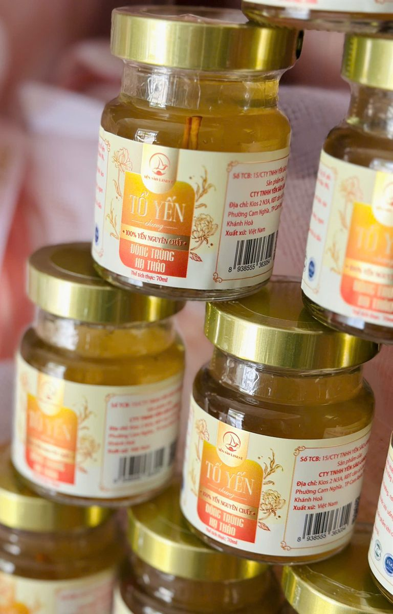
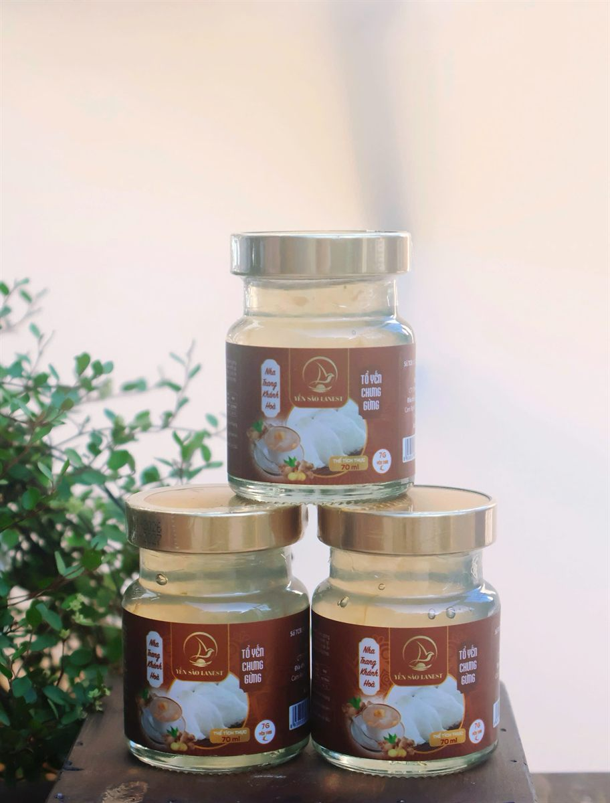

Cách Đọc Nhãn Yến Hũ Chưng Sẵn Trước Khi Mua: 6 Dòng Cần Nhìn Kỹ
Yến Sào Lanest · Đăng ngày 03/11/2026

Một hũ yến chưng sẵn chỉ cao hơn bàn tay, nhưng tấm nhãn quanh nó gần như là "lý lịch" của sản phẩm: bên trong có bao nhiêu yến, thêm những gì, ai chịu trách nhiệm, dùng đến khi nào. Biết cách đọc nhãn yến hũ, anh chị sẽ so được hai hũ một cách công bằng, không bị câu chữ quảng cáo dẫn đi. Bài này đi lần lượt từng dòng, lấy chính nhãn hũ của Lanest làm ví dụ.
Mặt trước ghi tên và loại sản phẩm, mặt bên là số tự công bố, tên công ty, địa chỉ, xuất xứ và mã vạch
1. Tên sản phẩm và thể tích thực
Dòng đầu tiên nên đọc là tên đầy đủ, vì tên đã cho biết đây là dòng nào. Ở Lanest, hai dòng yến hũ ghi tên khác nhau:
- Dòng nguyên chất ghi "Tổ Yến Chưng" kèm dòng chữ "100% yến nguyên chất" và tên vị, ví dụ Đông Trùng Hạ Thảo.
- Dòng 7g ghi tên vị, ví dụ "Tổ Yến Chưng Gừng", kèm ô nhỏ "7G yến tươi".
Cả hai dòng đều ghi "Thể tích thực: 70ml". Khi so giữa các nơi, nhớ so cùng thể tích.
2. Hàm lượng yến: "yến tươi" hay "tổ yến"?
Đây là dòng dễ đọc nhầm nhất. Cùng là con số gam, nhưng hai đơn vị khác hẳn nhau:
- Yến tươi là yến đã ngâm nở, ngậm nước. Hũ 7g của Lanest ghi "yến tươi 7g".
- Tổ yến là yến khô. Hũ nguyên chất ghi "1,5g tổ yến (15g yến tươi)".
Con số nhỏ hơn chưa chắc là ít yến hơn: quy về yến tươi, hũ nguyên chất có lượng yến gấp hơn 2 lần hũ 7g. Nhãn không ghi bao nhiêu gam, hay không nói rõ yến tươi hay tổ yến khô, thì nên hỏi lại người bán. So sánh chi tiết hai dòng có trong bài yến hũ nguyên chất và yến hũ 7g khác nhau thế nào.
3. Danh sách thành phần: đọc hết, kể cả chữ nhỏ
Nhãn khai đủ là nhãn dám ghi cả những thứ không "đẹp" bằng chữ yến. Ví dụ thật trên hai dòng của Lanest:
| Sản phẩm | Thành phần ghi trên nhãn |
| Tổ Yến Chưng Đông Trùng Hạ Thảo nguyên chất | Nước tinh khiết, 1,5g tổ yến (15g yến tươi), đông trùng hạ thảo (8%), đường phèn |
| Yến Chưng Đông Trùng Hạ Thảo (dòng 7g) | Nước, yến tươi 7g, đường phèn, đông trùng hạ thảo 1,9g, collagen thủy phân, chất xơ inulin, chất điều chỉnh độ acid INS (327, 331(iii)), chất ổn định INS (401, 407, 415, 466), hương yến tổng hợp |
Vài điểm nên để ý khi đọc:
- Mã INS là mã số của phụ gia. Nhãn tử tế ghi cả chức năng đi kèm, như "chất ổn định", "chất điều chỉnh độ acid", để người mua biết chất đó dùng làm gì. Ở hũ 7g, chất ổn định giúp nước yến sánh đều, không tách lớp trong suốt hạn dùng.
- Chữ "tổng hợp" sau chữ hương nghĩa là mùi đến từ hương liệu. Ví dụ hũ yến trẻ em vị dâu ghi "hương dâu tổng hợp": mùi dâu là từ hương liệu, không phải từ dâu tây tươi.
- Loại đường. Phần lớn các vị dùng đường phèn, riêng hai vị ăn kiêng của dòng 7g ghi "đường isomalt 2,4g" thay cho đường phèn.
Muốn xem đủ thành phần của cả 14 vị, anh chị đọc bài 14 vị yến chưng: chọn vị nào hợp với ai.
4. Số tự công bố (Số TCB)
Mỗi sản phẩm có một số tự công bố riêng, in trên nhãn theo dạng "số thứ tự / tên công ty / năm". Ví dụ nhãn Yến Chưng Đường Phèn dòng 7g ghi Số TCB 23/CÔNG TY TNHH YẾN SÀO LANEST/2025; nhãn Tổ Yến Chưng Gừng dòng 7g ghi 01/CÔNG TY TNHH YẾN SÀO LANEST/2026.
Số này cho biết sản phẩm đã có hồ sơ tự công bố đứng tên một công ty cụ thể. Nhãn không có số TCB, hoặc tên công ty trong số TCB khác với tên đơn vị in trên nhãn, là chỗ nên hỏi lại. Anh chị có quyền xin xem hồ sơ tự công bố và phiếu kiểm nghiệm của đúng sản phẩm mình mua; giấy tờ này khác với chứng nhận ISO của doanh nghiệp, như Lanest đã giải thích trong bài chứng nhận ISO 22000 và tem truy xuất.
5. Ngày sản xuất, hạn sử dụng, cách bảo quản

Hũ Tổ Yến Chưng Gừng dòng 7g: nhãn ghi "7G yến tươi", "thể tích thực 70ml"; ngày được in trên thành nắp
Trên nhãn yến hũ Lanest, dòng này ghi "NSX/HSD: Xem trên bao bì", vì ngày được in riêng trên bao bì; với hũ Lanest, anh chị xem ở thành nắp. Anh chị cứ lấy ngày in trên bao bì làm chuẩn.
Cùng chỗ đó, nhãn còn có:
- Bảo quản: nhiệt độ thường, nơi khô ráo, thoáng mát. Sau khi mở nắp thì bảo quản lạnh và dùng sớm.
- Cách dùng: lắc nhẹ trước khi uống, ngon hơn khi uống lạnh.
- Cảnh báo: không sử dụng sản phẩm khi thấy có dấu hiệu lạ.
Ngày in mờ, bị cạo, hoặc in đè lên nhau thì không nên mua.
6. Đơn vị chịu trách nhiệm, xuất xứ, mã vạch và tem
Mặt bên nhãn hũ Lanest ghi "Sản phẩm của: CTY TNHH Yến Sào Lanest", địa chỉ Kios 2 N3A, Khu đô thị căn cứ Cam Ranh, Khánh Hòa, và "Xuất xứ: Việt Nam". Đây là đầu mối anh chị liên hệ khi có thắc mắc. Nhãn không có tên công ty, địa chỉ rõ ràng thì nên cân nhắc.
Ngay dưới là mã vạch. Các mã vạch sản phẩm (mã GTIN) của Lanest được đăng ký với GS1 Việt Nam, xác thực đến 31/12/2027. Cuối cùng là tem: sản phẩm Lanest có tem chống hàng giả; khi nhận hàng, anh chị kiểm tra tem niêm phong còn nguyên, hũ không nứt, nắp kín. Nếu trên bao bì có mã QR, quét thử và xem thông tin hiện ra có khớp với nhãn hay không.
Bảng kiểm nhanh trước khi mua
- Tên sản phẩm, thể tích thực rõ ràng.
- Lượng yến ghi bằng số gam, nói rõ yến tươi hay tổ yến khô.
- Thành phần ghi đủ, kể cả phụ gia và hương liệu.
- Có số tự công bố đứng tên công ty in trên nhãn.
- Ngày sản xuất, hạn dùng in rõ, còn hạn.
- Có tên, địa chỉ đơn vị chịu trách nhiệm, mã vạch, tem niêm phong còn nguyên.
Phần chọn nơi bán và những câu nên hỏi người bán, anh chị xem thêm bài cách chọn mua yến sào chuẩn.
Câu hỏi thường gặp
Hũ ghi 7g yến tươi có nhiều yến hơn hũ ghi 1,5g tổ yến không?
Không. 1,5g tổ yến khô tương đương khoảng 15g yến tươi, tức hơn gấp đôi 7g yến tươi. Luôn xem đơn vị đi kèm con số.
Thấy mã INS trên nhãn có đáng lo không?
Các phụ gia trên nhãn yến hũ 7g Lanest nằm trong hồ sơ tự công bố, và các vị 7g công bố năm 2025 có phiếu kết quả thử nghiệm của Newcenlab. Muốn hũ không phụ gia thì chọn dòng nguyên chất. Yến hũ là thực phẩm, không phải thuốc; người đang điều trị bệnh nên hỏi bác sĩ trước khi dùng thường xuyên.
Muốn xem hồ sơ tự công bố của một vị cụ thể thì làm sao?
Anh chị gọi 0258 6278 627 hoặc nhắn fanpage Yến Sào Lanest, báo tên vị đang dùng để được gửi đúng giấy tờ của sản phẩm đó.